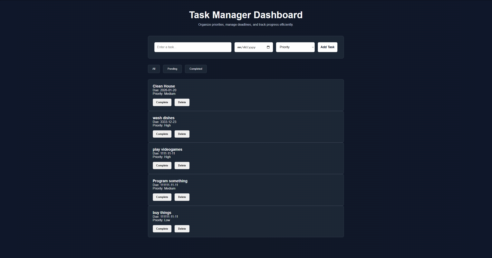

Task Manager Dashboard
A responsive productivity application built with vanilla JavaScript featuring task creation, priority management, due dates, completed state toggling, browser local storage persistence, and dynamic filtering systems.
Live Demo